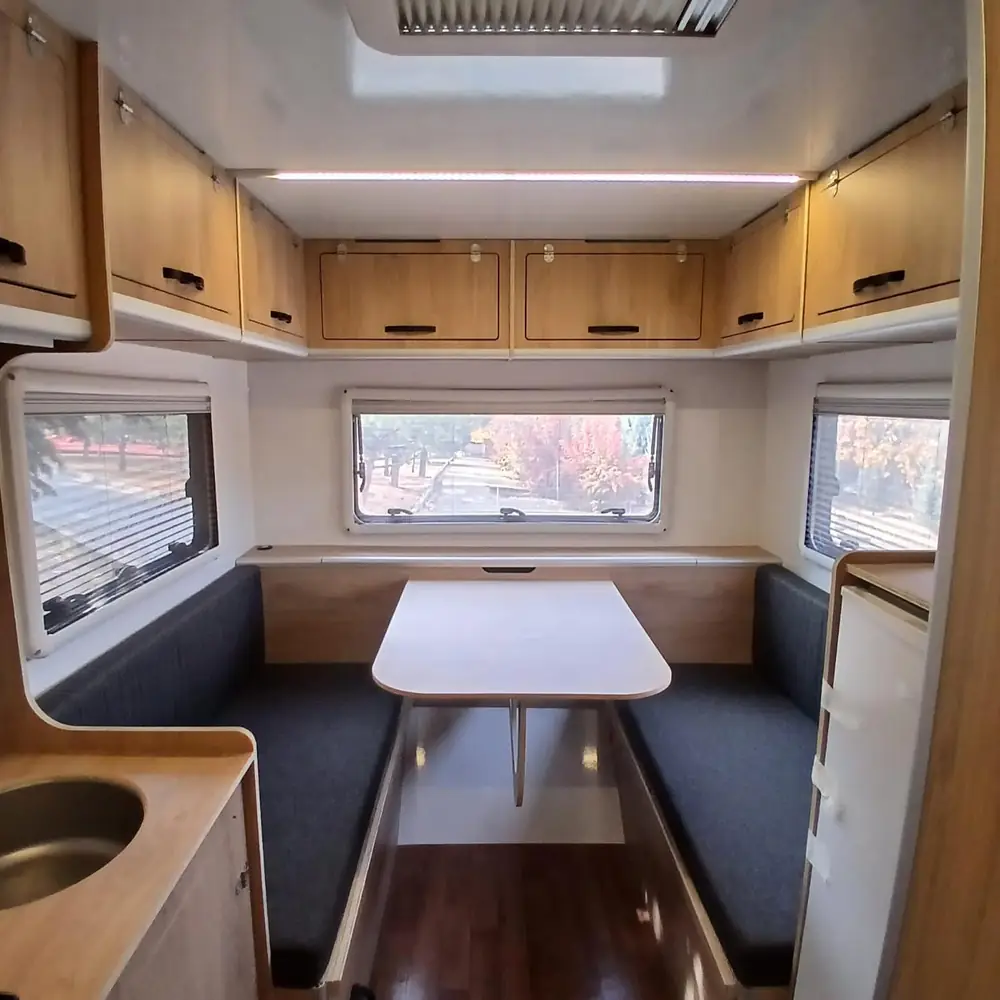
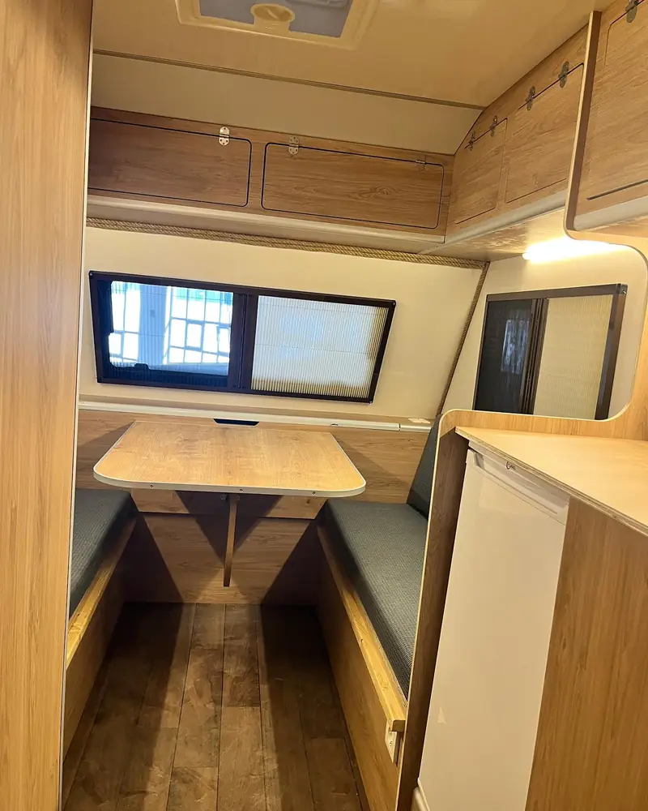
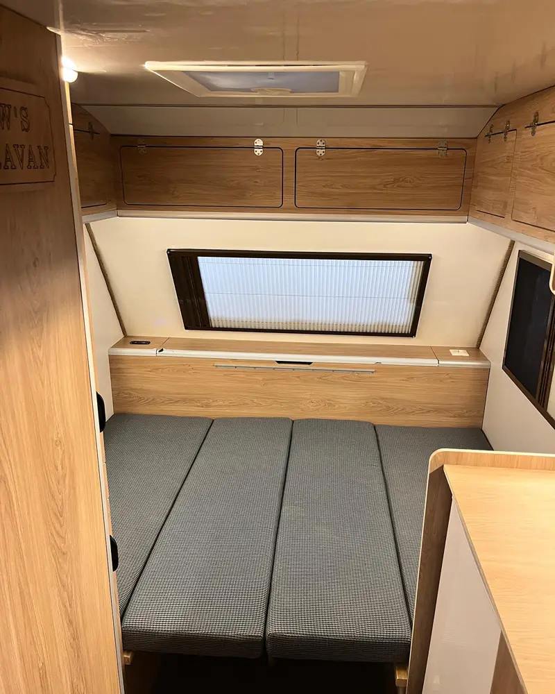
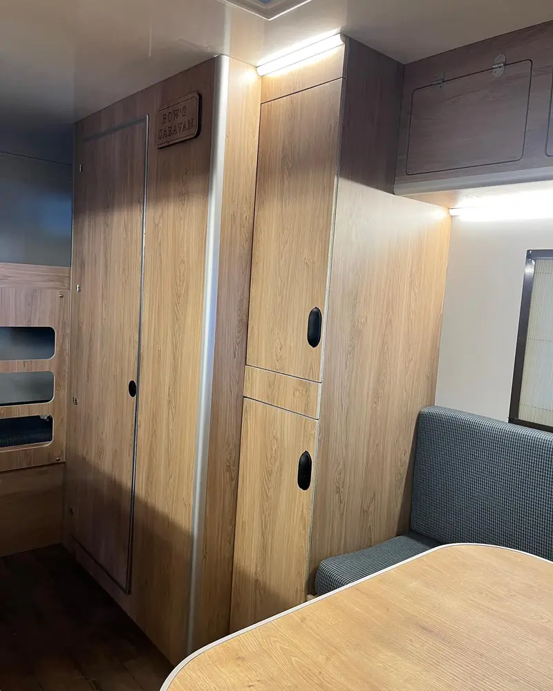
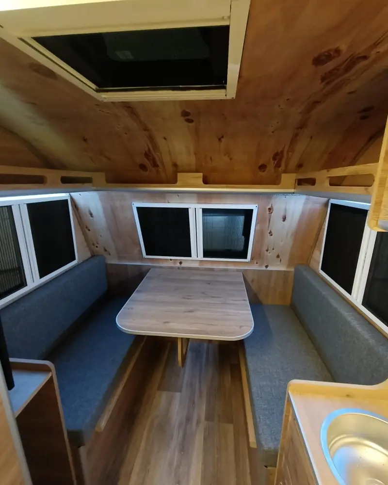
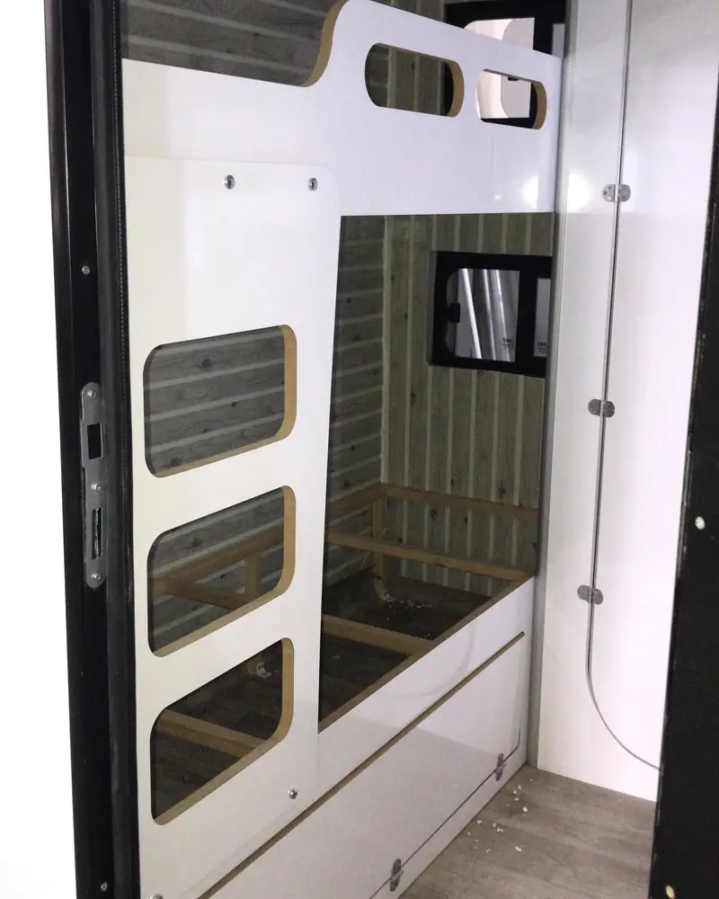

Ankara Karavan İmalatçısı ve Üreticisi: Bows Karavan
Bows Karavan (BOW'S CARAVAN) olarak Ankara'daki modern atölyemizde, 10 yılı aşkın deneyimimizle kişiye özel karavan üretimi ve karavan imalatı hizmeti sunuyoruz. Her projeyi benzersiz kılmak için müşterilerimizin hayallerini dinliyor, ihtiyaçlarını analiz ediyor ve en kaliteli malzemelerle hayata geçiriyoruz.
Türkiye'de karavan kültürü her geçen gün büyüyor. "Van life" akımının yükselişiyle birlikte, özgürce seyahat etmek isteyen bireyler ve aileler için karavan, artık lüks değil bir yaşam tarzı haline geldi. Ankara karavan firmaları arasında, Ankara karavan imalatı ve üretimi denildiğinde akla ilk gelen isim olmak için çalışıyoruz.
Ürettiğimiz Karavanlardan Görüntüler
Kişiye özel tasarladığımız iç mekanlardan örnekler.






Karavan İmalat ve Üretim Sürecimiz
Müşteri Görüşmesi ve İhtiyaç Analizi
İlk adım olarak sizinle detaylı bir görüşme yapıyoruz. Karavanı nasıl kullanacağınız, kaç kişilik olması gerektiği, hangi donanımları istediğiniz gibi tüm detayları konuşuyoruz. Bu aşamada bütçenizi de değerlendirerek size en uygun çözümü sunuyoruz.
Tasarım ve 3D Modelleme
İhtiyaçlarınıza göre profesyonel tasarım ekibimiz karavanınızın planlarını çıkarır. İç mekan yerleşimi, elektrik hatları, su tesisatı ve mobilya düzeni detaylı olarak planlanır. Onayınızı aldıktan sonra üretime geçilir.
Premium Malzeme Seçimi
Karavanlarımızda yalnızca A kalite malzemeler kullanıyoruz. Su yalıtımı için marine grade malzemeler, mobilyalar için nem dayanımlı MDF ve laminat, elektrik sistemleri için sertifikalı komponentler tercih ediyoruz.
Üretim ve Montaj
Deneyimli ustalarımız, her detaya özen göstererek karavanınızı üretir. Yalıtım, elektrik tesisatı, su sistemleri, mobilya montajı ve son dokunuşlar titizlikle gerçekleştirilir. Süreç boyunca sizi bilgilendiririz.
Kalite Kontrol ve Teslimat
Üretim tamamlandığında kapsamlı bir kalite kontrol yapılır. Tüm sistemler test edilir, su sızıntı testi yapılır ve elektrik devreleri kontrol edilir. Teslimat sırasında karavanınızın tüm özelliklerini sizinle birlikte inceleriz.
Ürettiğimiz Karavan Türleri
Panel Van Dönüşüm
Fiat Ducato, Mercedes Sprinter, Ford Transit, Volkswagen Crafter gibi panel vanları tam donanımlı motokaravanlara dönüştürüyoruz. Kompakt ama fonksiyonel tasarımlar.
- Fiat Ducato L2H2, L3H2, L4H2
- Mercedes Sprinter
- Ford Transit
- Volkswagen Crafter
- Renault Master
Çekme Karavan İmalatı
Sıfırdan çekme karavan imalatı yapıyoruz. Hafif ama dayanıklı şase yapısı, modern iç tasarım ve tüm konfor özellikleriyle hayalinizdeki çekme karavanı üretiyoruz.
- Mini çekme karavanlar (2-3 kişilik)
- Standart çekme karavanlar (4-5 kişilik)
- Lüks çekme karavanlar
- Off-road çekme karavanlar
Minibüs Dönüşüm
Minibüs ve midibüsleri geniş yaşam alanlı karavanlara çeviriyoruz. Geniş iç hacim sayesinde daha konforlu çözümler sunabiliyoruz.
- Mercedes Vito/V-Class
- Volkswagen Transporter/Caravelle
- Ford Tourneo Custom
- Hyundai H350
Karavan Donanımları ve Özellikler
🍳 Mutfak Sistemleri
- 2-3 gözlü ocak (LPG veya indüksiyon)
- Kompresörlü buzdolabı (40-90 litre)
- Paslanmaz çelik evye
- Tezgah ve dolap sistemleri
- Mikrodalga fırın (opsiyonel)
🛏️ Yatak ve Oturma Alanı
- Çift kişilik sabit yatak
- Dönüşebilir dinlenme alanı
- Yüksek yoğunluklu sünger
- Özel üretim yataklar
- Depolama çözümleri
🚿 Banyo/WC Çözümleri
- Portatif veya sabit tuvalet
- Duş kabini
- Sıcak su sistemi (LPG/elektrik)
- Temiz/kirli su tankları
- Lavabo
⚡ Elektrik Sistemleri
- Yardımcı akü sistemi (100-200Ah)
- Solar panel kurulumu
- Inverter (220V çıkış)
- Harici şarj girişi
- USB ve 12V prizler
- LED aydınlatma
🌡️ İklimlendirme
- Dizel ısıtıcı (Webasto/Eberspacher)
- Çatı kliması (opsiyonel)
- Havalandırma pencereleri
- Isı yalıtımı (25-50mm)
🔒 Güvenlik
- Güvenlik kilitleri
- Duman dedektörü
- CO dedektörü
- Yangın söndürücü
- Alarm sistemi (opsiyonel)
Neden BOW'S CARAVAN?
10+ Yıl Deneyim
Karavan sektöründe 10 yılı aşkın tecrübe ve 150'den fazla tamamlanmış proje.
%100 Müşteri Memnuniyeti
Tüm projelerimizde müşteri memnuniyetini ön planda tutuyoruz.
İşçilik Garantisi
Tüm üretimlerimiz işçilik garantisi kapsamındadır.
Kişiye Özel Tasarım
Her karavan, müşterimizin ihtiyaçlarına göre özel olarak tasarlanır.
Karavan Üretim Fiyatları
Ankara karavan üretimi fiyatları, projenin kapsamına göre değişmektedir. Fiyatı etkileyen başlıca faktörler:
- Araç tipi ve boyutu: Küçük van dönüşümleri, büyük panel van dönüşümlerine göre daha ekonomiktir.
- Malzeme kalitesi: Premium malzeme tercihleriniz fiyatı etkiler.
- İstenilen donanımlar: Klima, solar panel, dizel ısıtıcı gibi ekstralar.
- Özel tasarım istekleri: Standart dışı çözümler ek maliyet getirebilir.
Keşif ve fiyat teklifi için bizimle iletişime geçin. Bütçenize uygun en iyi çözümü birlikte belirleyelim.
Hayalinizdeki Karavanı Birlikte Yapalım
Ankara'da kişiye özel karavan yaptırmak istiyorsanız, BOW'S CARAVAN olarak size yardımcı olmaktan mutluluk duyarız. Keşif ve danışmanlık hizmetimizden yararlanın.
Sıkça Sorulan Sorular
Karavan üretimi ne kadar sürer?
Karavan üretim süresi projenin kapsamına göre değişir. Basit bir van dönüşüm projesi 6-8 hafta, kapsamlı bir motokaravan projesi 10-14 hafta sürebilir. Çekme karavan imalatı ise 8-12 hafta arasında tamamlanır.
Kendi aracımı getirmem gerekiyor mu?
Evet, panel van veya minibüs dönüşüm projelerinde aracınızı siz temin edersiniz. Araç seçiminde size danışmanlık yapabiliriz. Çekme karavan projeleri için araç gerekmez, komple üretimi biz yaparız.
Taksit imkanı var mı?
Evet, uygun ödeme planları sunuyoruz. Proje başlangıcında %40, ara aşamada %30 ve teslimatta %30 şeklinde taksitlendirme yapılabilir. Detaylar için görüşme sırasında konuşabiliriz.
Garanti kapsamı nedir?
Tüm işçilik 2 yıl garanti kapsamındadır. Kullandığımız ekipmanlar (ocak, buzdolabı, ısıtıcı vb.) kendi üretici garantileriyle birlikte gelir. Garanti kapsamı dışında da her zaman destek alabilirsiniz.
Üretim sürecini takip edebilir miyim?
Elbette! Atölyemizi ziyaret edebilir, süreç boyunca fotoğraf ve video güncellemeleri alabilirsiniz. Müşterilerimizi her aşamada bilgilendiriyoruz.